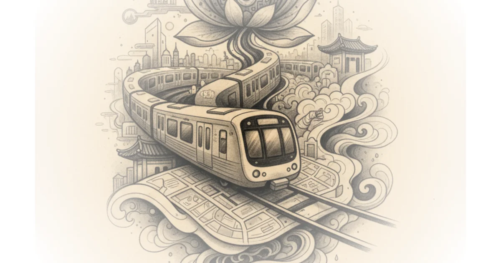

Jason Slaughter doesn't just praise the Seoul Metro; he dismantles the assumption that Western cities have nothing to learn from Asian transit systems. His most striking claim isn't that Seoul is fast, but that it treats public transportation as a seamless, life-saving utility rather than a budget line item to be trimmed. For the busy professional who assumes their local commute is a necessary evil, Slaughter's evidence that a metro system can be both safer and more efficient than New York or London demands attention.
The Scale of Integration
Slaughter begins by contextualizing the sheer velocity of Seoul's development. He notes that in 1970, the city had no metro system at all, yet by today, it boasts one of the top five largest networks globally. "Metro Line 1 was the first to open in 1974," he writes, "and now it's one of the top five largest metro systems in the world with a higher yearly ridership than Paris, London, or New York." This rapid scaling is impressive, but the author argues the real genius lies in how the system blurs the boundaries between different types of rail. He explains that the network doesn't force passengers to travel into the city center only to transfer back out; instead, lines connect satellite cities directly. "Public transit works best when it arrives so frequently that there's no point in looking at a schedule," Slaughter observes, noting that trains arrive every two to three minutes during rush hour. This frequency transforms the metro from a service requiring planning into an ambient utility, a shift that critics of Western systems often cite as the ultimate goal but rarely achieve.

Safety as a Design Priority
The most compelling section of the piece focuses on platform screen doors, a feature Slaughter argues is treated as a luxury elsewhere but is standard in Seoul. He points out that while many cities cut these doors to save money during construction, Seoul installed them at every station by 2009. "When Seoul installed platform screen doors, average annual fatalities dropped from 37.1 to 4," he writes, highlighting the immediate human cost of cutting corners. The author goes beyond safety, detailing how these doors reduce particulate pollution by 20% and save millions in air conditioning costs by isolating the platform from the tunnel. "Platform screen doors will easily pay for themselves in lower cooling costs, maintenance costs, and the cost of delays," Slaughter asserts. This is a powerful economic and ethical argument: what Western planners view as an expense, Seoul views as a necessary investment that pays dividends in safety and efficiency. A counterargument worth considering is the massive upfront capital required for retrofitting older stations, which Slaughter admits is a hurdle, but his data suggests the long-term operational savings outweigh the initial outlay.
When you build a metro line, the people who worked on it become very good at building metro lines. So, the best thing you can do is immediately put them on another metro project.
The Ecosystem of Wayfinding
Slaughter shifts his focus to the subtle details that make the system navigable without constant cognitive load. He describes how the system uses audio cues, such as distinct jingles for inbound and outbound trains, to help passengers orient themselves. "These songs might seem kind of frivolous, but they're really not," he argues, framing them as a sophisticated form of wayfinding. The integration extends to digital tools; while he notes that Google Maps fails in South Korea, local apps like Kakao Metro tell users exactly which door to wait by, ensuring a smooth flow of passengers. "This doesn't just make it faster to take the metro," Slaughter writes, "I also found it was much harder to get lost because I just went up whatever escalator was directly in front of me." This level of coordination between physical infrastructure and digital navigation creates a frictionless experience that Western systems, often plagued by fragmented data and poor signage, struggle to replicate.
The Continuity of Expertise
Perhaps the most forward-looking part of the commentary addresses the importance of continuous construction. Slaughter argues that the secret to Seoul's excellence isn't a single brilliant engineer, but the policy of keeping construction teams constantly employed. "There are too many cities that build their metro systems in bursts with several years in between projects," he writes, explaining that this leads to a loss of institutional knowledge. By maintaining a steady pipeline of projects, including the new Great Train Express (GTX) lines that function as high-speed commuter metros, Seoul ensures that expertise is retained and refined. "This city is stuck paying experts and dealing with inexperienced people who make mistakes," Slaughter warns regarding cities that pause their projects. While the author admits that Korean rail websites are notoriously difficult to navigate, he separates this digital failure from the physical operation, which remains world-class.
Bottom Line
Jason Slaughter's strongest argument is that Seoul's success stems from a holistic view of transit where safety, efficiency, and user experience are non-negotiable design constraints rather than optional features. The piece's biggest vulnerability is its reliance on the assumption that other cities can simply replicate these systems without the same political will or long-term funding commitment. However, the evidence that platform screen doors save lives and money provides a concrete, undeniable case for immediate action.
When you build a metro line, the people who worked on it become very good at building metro lines. So, the best thing you can do is immediately put them on another metro project.